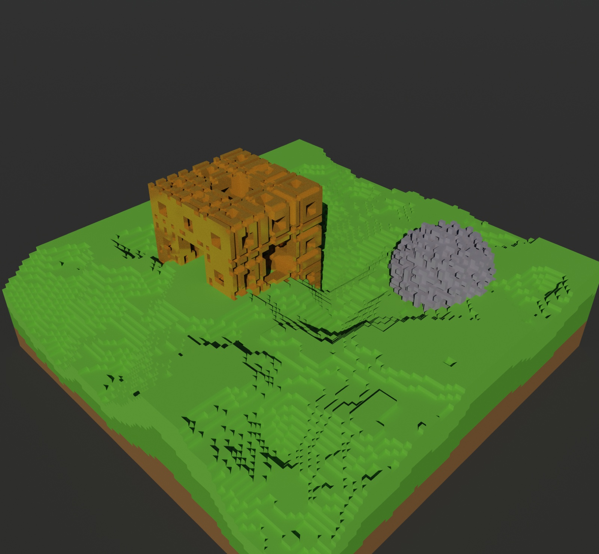

What Voxferro is
A voxel is to a volume what a pixel is to an image: one cell of a 3D grid. Voxferro is a program for modelling with voxels: you attach, erase and paint little cubes with brushes, arrange several models in a scene, animate them and make photorealistic renders.
It opens and saves .vox files without losing anything (materials, cameras, layers, animation, render settings).
File compatibility is a goal; the architecture is its own, in idiomatic Rust.
What it does today, in short:
- Editing: voxel, box, line, face, fill, pattern and script brushes; selection, copy and paste, transforms with the mouse; an Edit panel (fill, clear, mirror, Perlin noise, maze, erosion...).
- Scenes: several models, groups, layers and keyframe animation.
- Rendering: a progressive path tracer on the GPU, with metal, glass, emission, clouds, an atmospheric sky and HDR maps.
- Export: OBJ, PLY, marching cubes, XRAW, Qubicle, SLAB6, PNG slices and isometric sprites.
- Automation: a command console, voxel scripts on the GPU and an MCP server so an AI agent can use the editor.
The journey of a voxel
The easiest way to understand the program is to follow one voxel from the disk to the screen. Each step is a chapter of this guide:
- ReadThe
.voxfile becomes Rust structures. - Hold in memoryA dense grid of bytes, split into 32³ blocks.
- EditEvery change is a command that knows how to undo itself.
- DrawA mesh of visible faces, rasterised with wgpu.
- RenderRays walking the grid in a compute shader.
The first two stages know nothing about graphics. The last three live in the application, the only part that talks to the GPU.
Technologies
Everything is written in Rust (edition 2024, minimum version 1.89) and in WGSL, WebGPU's shading language. These are the pieces and why they were chosen:
| Piece | For | Why this one |
|---|---|---|
eframe / egui 0.36 | Window, event loop and interface | An immediate mode UI: the whole interface is described again every frame, with no widget tree to keep in sync. It brings wgpu by default. |
wgpu 30 | All the graphics | One API that becomes Metal on the Mac and Vulkan on Linux and Windows (DirectX 12 where a Windows machine has no Vulkan driver). On Apple silicon it emits native Metal, never touching OpenGL. |
| WGSL | Shaders: viewport, shadows, path tracer, post-processing, kernels | wgpu's own language; naga translates it for each platform (MSL, HLSL, SPIR-V). |
naga 30 | Voxel scripts | Compiles GLSL voxel scripts to WGSL, and reports errors with line numbers before the GPU sees them. |
glam 0.34 | Vectors, matrices, quaternions | SIMD, and the ecosystem standard. |
bytemuck | Handing structs to the GPU | #[derive(Pod)] turns a struct into bytes without copies or unsafe of our own. |
rfd 0.17 | Open and save dialogs | Each system's native panels. |
miniz_oxide, png | PNG images | Compressing renders, and reading palette files, which are 256×1 PNGs. |
rmcp, tokio, axum | The MCP server | The official Rust SDK for the Model Context Protocol, served over HTTP on a thread of its own. |
egui-phosphor | Icons | The Phosphor icon font, packaged for egui. |
dot_vox | Tests only | An independent .vox reader, to check that ours reads the same. |
| GitHub Actions | CI and releases | Builds, tests and packages on Linux, Windows and macOS. |
eframe already depends on wgpu. If the project asked for another wgpu version, Cargo would build both and their types would stop being assignable to each other, with nearly unreadable errors. So the versions are chosen to keep a single wgpu in the graph, checked with cargo tree | grep wgpu.
Three crates
The code is a Cargo workspace of three crates (Rust packages). Each depends only on those to its left:
vox-format
Reads and writes .vox files (versions 150 and 200). It only knows about bytes.
voxel-core
The volume, the scene graph, animation, undo, brushes, meshing, marching cubes and the exports.
depends on: vox-format, glamapp (the voxferro binary)
The window, the interface, wgpu, the shaders, the console, the path tracer and the MCP server.
depends on: voxel-core, eframe, wgpu…The split is deliberate: the first two crates depend on nothing graphical. So cargo test -p vox-format -p voxel-core takes seconds, because it does not compile wgpu, and the logic can be tested without a window or a GPU.
# the fast tests: no wgpu
cargo test -p vox-format -p voxel-core
# everything, as CI runs it
cargo clippy --workspace --all-targets -- -D warnings
cargo test --workspaceReading a .vox file
A .vox starts with the magic word VOX and a version number. Then comes a tree of chunks, RIFF style. Every chunk opens with a three-field header:
Since every chunk says how long its content is and how long its children are, a reader can step over any chunk it does not know. That is why one parser reads every version of the format, and why files written by newer versions of the format do not break the reader.
| Chunk | What it holds |
|---|---|
MAIN | The root; everything else is its children. |
SIZE + XYZI | One model: its size, and the list of voxels, four bytes each (x, y, z, colour index). |
RGBA | The palette: 256 colours. |
nTRN, nGRP, nSHP | The scene graph: transforms, groups and shapes (which model is shown). |
LAYR | Layers: name, colour, visibility. |
MATL | Each colour's material: diffuse, metal, glass, emissive, cloud, blend. |
rOBJ, rCAM | Render settings and saved cameras. |
IMAP, NOTE, META | The order the palette is shown in, its notes, and data such as the animation range. |
DICT: the bag of keys
Nodes, layers, materials, cameras and settings do not store packed structs but text key/value pairs (_t "10 0 4", _rough "0.1"). A reader that does not recognise a key just ignores it. Voxferro goes further: it keeps the keys it does not understand and writes them back, so nothing is lost on save.
Writing
Writing has a catch: a chunk header needs the size of its children before they are written. write.rs builds each chunk in its own buffer and splices it in once the lengths are known. Saving is atomic: the file is written under a temporary name and renamed, so a failure halfway never leaves a broken file.
The model in memory
Volume: a dense grid
A model is a Volume: a Vec<u8> with one byte per cell. The byte is a palette index (1 to 255); 0 means empty. It is dense, not sparse: a model is at most 256³, so the worst case is 16 MB, and in exchange reading any cell always costs the same.
pub struct Volume {
size: [u32; 3],
voxels: Vec<u8>, // palette index per cell; 0 = empty
versions: Vec<u64>, // one version per 32³ block
}The volume is split into 32³ blocks, and each block carries a version that changes whenever one of its voxels does. Versions come from a global counter, so they are never reused. Everything derived from the voxels (the mesh, the path tracer's grid) compares versions and redoes only the blocks that changed, whether the change came from a brush, the console, a kernel or undo.
Document: everything an edit can change
The Document gathers the scene (models and graph), the palette, the materials, the render settings, the layers, the cameras and the palette order. It is exactly what goes into the file.
Scene graph and animation
The nTRN → nGRP → nSHP nodes form a tree. To draw, flatten() walks it at a given frame and produces a flat list of instances: which model, where, turned how. A model placed ten times is stored once and instanced ten times.
Animation stores keyframes on the nodes. Between two keys, position is interpolated linearly. This was not guessed: a saved animated file keys x = 44 at frame 11 and x = 148 at frame 19, and stores the position at frame 17 as 122, exactly 44 + 6/8 · 104.
Editing and undo
The central idea: everything goes through the console. A button, a shortcut, a typed line, a script or an agent over MCP all produce the same thing, a line of text, and a single interpreter runs it.
--scriptbrush attach boxconsole::executeCommand valueapplied to the DocumentThanks to that, automation came for free: anything a click does can be written in a script, and an agent uses exactly the same undo history as the person.
Changes are values
Every undoable change is a variant of enum Command, holding the before and the after:
pub enum Command {
SetVoxels { model: usize, changes: Vec<(IVec3, u8, u8)> }, // cell, before, after
ReplaceModel { model: usize, before: Volume, after: Volume },
SetColor { index: u8, before: Color, after: Color },
SetGraph { before: Vec<SceneNode>, after: Vec<SceneNode> },
// ... palette, materials, render, layers, cameras
}An enum has one advantage over a class per command, each with its own undo and redo: Rust's match is exhaustive, so adding a command that cannot be undone is a build error rather than a bug found later.
Brushes as pure functions
A brush crosses a mode (attach, erase, paint) with a shape (voxel, box, line, face, fill). In brush.rs each combination is a pure function: it takes the volume and the stroke's points and returns the list of cells to write. The app turns that list into a single Command, so a whole stroke undoes in one step.
To know which voxel is under the mouse, raycast.rs casts a ray from the camera with the same DDA algorithm the path tracer uses (see chapter 9).
Drawing the editor
The GPU draws triangles, not voxels. So the editor turns each model into a mesh, in three steps.
1. Only the visible faces
A face is drawn only if the cell beyond it is empty. A solid 64³ block has 24,576 visible faces instead of 1.5 million: the difference between a viewer that runs and one that does not.
2. Merging faces (greedy meshing)
Coplanar faces of one colour are merged into rectangles. For each direction and each slice, the visible faces form a 2D grid of colours; rectangles grow first along one axis, then along the other.
3. Redoing only what changed
Each model is meshed in 32³ blocks, and each block remembers the versions it was built from (its own and its six neighbours', since a face on the border depends on the neighbour). After an edit only the touched blocks are redone, on every core. On an Apple M2, a 256³ model of 4.5 million voxels meshes in about 100 ms; editing it afterwards costs about 8 ms.
The render pass
egui draws the interface in its own render pass, but that pass has no depth buffer, which solid geometry needs. So the scene is drawn with wgpu into a texture of its own (colour and depth), which is then registered with egui and shown like any other image.
voxel.wgslshades the faces. Each vertex carries a palette index instead of a colour: changing a palette colour rebuilds no mesh at all.shadow.wgslbuilds a shadow map: the scene's depth as the light sees it.lines.wgsldraws the model's box and the floor grid, alpha blended.

The path tracer
Render mode does not use the mesh. It casts rays from the camera, bounces them through the scene and averages a great many random light paths. That is path tracing, and it gives soft shadows, reflections, glass and indirect light without tricks.
Progressive
A compute shader (pathtrace.wgsl, in 8×8 pixel workgroups) computes one sample per pixel each frame and adds it to an accumulator. The image clears up while the camera holds still and starts over when it moves.
Windows resets a GPU whose work runs longer than two seconds. On an integrated GPU, one sample of a large image with voxel shapes took four, and the device was lost. So each sample is traced in bands of rows, each submitted on its own. The band size follows the measured GPU time, aiming at a tenth of a second, so a fast GPU is soon back to a single submission per sample, and the image is the same to the bit.
Walking the grid: DDA
The whole visible scene goes to the GPU as a 3D texture of indices. To advance a ray, the Amanatides–Woo DDA steps along whichever axis reaches its next cell border first. Every cell the ray touches is visited, in order, so the first solid one is truly the nearest. Fixed-size steps could tunnel through a one-voxel wall without seeing it.
OpenGL 2 had no compute stage and no storage buffers, so a volume had to be packed into a 2D texture with modular arithmetic. With wgpu the grid is read directly in 3D and all of that packing disappears.
Materials and light
- Materials: the
MATLchunks are resolved on the CPU into a 256-entry table, one per colour. There are diffuse, metal, glass (with Beer–Lambert absorption: glass takes its colour from what it absorbs), emissive, cloud (a medium that absorbs, scatters or emits) and blend. - Sun and sky: one shadow ray toward the sun at every bounce. The sky can be uniform, an HDR map (sampled by brightness, with a running-sum table) or atmospheric, with Rayleigh and Mie scattering that reddens the sun at sunset.
- Lamps: emissive voxels with a face open to the air are listed on the CPU. A surface picks one at random and casts a shadow ray at it (next event estimation), instead of waiting for a bounce to find it by luck.
- Randomness: a PCG hash per pixel and frame, and cosine-weighted directions, so the Lambert term cancels out.
Post-processing
A second compute shader, post.wgsl, reads the accumulator and applies bloom, exposure, vignette, the ACES tone curve and gamma. It is a separate pass because bloom reads neighbouring pixels, which the first pass is still writing.
Voxel shapes
Voxels can be rendered as spheres, cylinders, studded bricks, clay or marching cubes. That code sits behind a pipeline constant (override SHAPE, the shape's number): the usual pipeline is compiled with 0, which leaves no shape code at all, and each shape gets its own pipeline the first time it is used, with only that shape's code in it. The reason is Windows: every call is inlined, and with all five shapes in one kernel DirectX compiled it slowly, ran it several times slower than Vulkan, and its software rasteriser drew it black. The marching cubes table is built by joining the crossed edges on each face of the cell.
Lines on the surfaces
The render can draw a grid every few voxels and a line along every edge where the surface turns. They are not a second pass: a surface point simply takes the line's colour before it is lit, at every bounce, so lines show in reflections too.

Compute on the GPU
The GPU does more than draw. Several editing operations are kernels: a function evaluated once per voxel, all at once, in a compute shader (voxel_ops.wgsl, in 4×4×4 workgroups).
Voxel scripts (xs)
The xs command runs user scripts. A script defines a function map(v) that receives a cell's centre and returns the colour index to put there. Voxferro accepts two languages:
- GLSL (
.txt): GLSL voxel scripts, unchanged.nagacompiles them into a compute shader and hands them to wgpu as WGSL. - WGSL (
.wgsl): the project's own, such asterrain,mengerorerode.
Each pass reads the model as it was before the pass, never what the same pass has already written. So a script can grow, erode or shift a model, and -n 3 chains three passes.

terrain, a Menger sponge from menger and a ball worn by three passes of erode.Driven by an agent
Voxferro includes an MCP server (Model Context Protocol), the protocol AI agents use to call external tools. With --mcp, or from the panel, it listens on 127.0.0.1:47800. It is a Streamable HTTP server that speaks every protocol version from 2024-11-05 to 2026-07-28, with no sign-in, so any current client connects to its URL as it is.
cargo run -p voxferro -- --mcp # or: voxferro --mcp [port]With Voxferro running, point the agent at it. With another port, change 47800 in the URL.
Claude Code
claude mcp add --transport http voxferro http://127.0.0.1:47800/mcpCodex
One command, or a table in ~/.codex/config.toml (or in a trusted project's .codex/config.toml):
codex mcp add voxferro --url http://127.0.0.1:47800/mcp
# ~/.codex/config.toml
[mcp_servers.voxferro]
url = "http://127.0.0.1:47800/mcp"opencode
One command (add --global for every project), or an entry in opencode.json. The server needs no sign-in, so OAuth goes off; versions before opencode's v2 configuration put the entry straight under "mcp", without "servers".
opencode mcp add voxferro --url http://127.0.0.1:47800/mcp
// opencode.json
{
"$schema": "https://opencode.ai/config.json",
"mcp": {
"servers": {
"voxferro": {
"type": "remote",
"url": "http://127.0.0.1:47800/mcp",
"oauth": false
}
}
}
}Then ask for something, for example “build a small stone tower with a red roof in Voxferro and show me a render”: the agent starts with describe_scene and get_palette, builds with run_commands and looks at its work with capture_view.
The server runs on its own thread, with its own tokio runtime, and never touches the document. Each call becomes a request to the UI thread, which runs it between frames as if it had been typed in the console: same interpreter, same undo history. The answer comes back on a oneshot channel.
| Tool | What it does |
|---|---|
run_command, run_commands | Runs one console line, or several as one undo step. |
describe_scene, get_palette | Describes the document (as structured JSON, with its schema) and the palette. |
set_voxels | Writes given voxels of the selected model. |
capture_view | Returns the editor view or the render as a PNG, so the agent sees what it did; a render reports its samples as progress. |
open_file, save_file | Opens and saves; writing over a file needs the person's yes. |
The tools carry annotations: the ones that only read (describe_scene, get_palette, capture_view) are marked so, and a client can let the agent use them without asking each time. Cancelling a call in the client also drops it in the editor, a long render included.
Security: it accepts local connections only, refuses any request a browser marks with an Origin (against attacks from web pages) and never overwrites a file without confirmation in the window.
Tests, fuzzing and CI
- 301 tests, each next to the code it tests (
#[cfg(test)] mod testsat the end of the file). The.voxreader is checked againstdot_voxand against sample models. - Fuzzing:
examples/fuzz_vox.rscorrupts valid files and checks that the reader never panics. The last run passed 120,000 cases without a failure. - Clippy with
-D warnings: any warning fails CI.
Continuous integration
On every push, GitHub Actions builds and tests on Linux and Windows, and runs three smoke tests: opening the editor view, path tracing a scene (and checking the image's mean brightness) and an MCP session in both protocols, with a session as before and without one as in 2026-07-28. The runners have no GPU: Linux uses lavapipe (Vulkan in software) and Windows WARP, DirectX's software rasteriser, which found real bugs:
- The main thread's stack (1 MB) overflowed while compiling the shader;
build.rsraises it to 16 MB. - The FXC compiler cannot write to a vector through a variable index (
v[axis] = …), so masks are used instead. - A shader that was too large drew black, without any error; hence a pipeline per voxel shape, and a path tracer that lights each bounce from a single block of code.
Pushing a v* tag runs another workflow that builds the four downloads: macOS universal (.dmg and .zip), Windows and Linux.
Where to start reading
An order that follows the voxel's journey. Every file opens with a //! comment that explains what it does and why:
crates/vox-format/src/lib.rs,dict.rsandparse.rs: the format.crates/voxel-core/src/volume.rs,document.rsandcommand.rs: the model and undo.mesh.rs,greedy.rsandmesh_cache.rs: from voxels to triangles.raycast.rsandbrush.rs: the mouse and the brushes.crates/app/src/main.rs,console.rsandrenderer.rswithshaders/voxel.wgsl: the app and the viewport.pathtrace.rs,shaders/pathtrace.wgslandpost.wgsl: the render.xs.rsandmcp.rs: scripts and agents.
To see it working, rebuild the island from the top of this page and render it:
cargo run --release -p voxferro -- --script assets/showcase/island.cmds --render-modeAnd for a render to a PNG with nobody at the window:
cargo run --release -p voxferro -- scene.vox --run "render image 1920 1080 256 out.png"The roadmap lists the phases and where each one stands, and the README every console command and shortcut.
Glossary
- Voxel
- One cell of a 3D grid. Here it holds a palette index.
- Palette index
- A number from 1 to 255 that points to a colour (and a material). 0 is empty.
- Chunk
- Two different things: in the file, a block with a header; in memory, a 32³ block of voxels with its version.
- Mesh
- The list of triangles the GPU draws.
- Greedy meshing
- Merging coplanar faces of one colour into large rectangles.
- Shader
- A program that runs on the GPU. Vertex and fragment shaders draw; compute shaders calculate anything.
- WGSL
- The shading language of WebGPU and wgpu.
- Uniform / storage buffer
- Two ways to hand data to a shader: a uniform is small, read-only and fast; a storage buffer is large and can be written.
- Path tracing
- Simulating light by following random ray paths and averaging them.
- DDA
- Walking a grid with a ray, cell by cell, without skipping any.
- Next event estimation
- Aiming a ray straight at a light instead of waiting to find it at random.
- Tone mapping (ACES)
- Compressing a render's light, which has no ceiling, into the range a screen shows.
- Immediate mode UI
- The interface is described again every frame, as egui does.
- MCP
- Model Context Protocol: the protocol an AI agent uses to call tools.
- Fuzzing
- Testing a program with thousands of corrupt or random inputs to find failures.
- Clippy
- Rust's linter: it warns about suspicious or unidiomatic code.
- MSRV
- The minimum Rust version the project builds with (1.89).